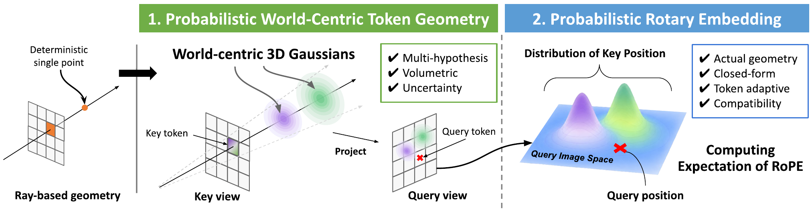
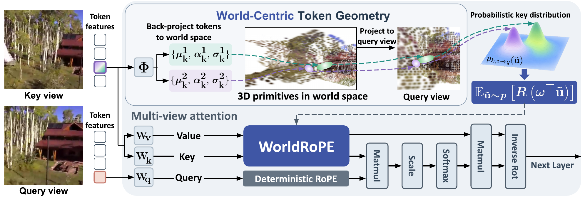
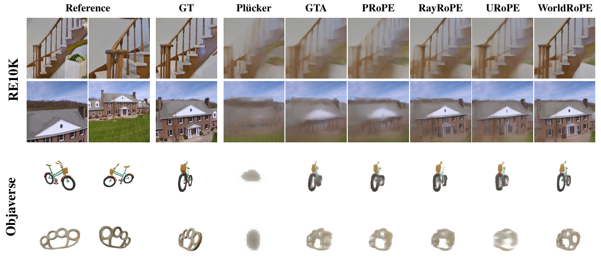
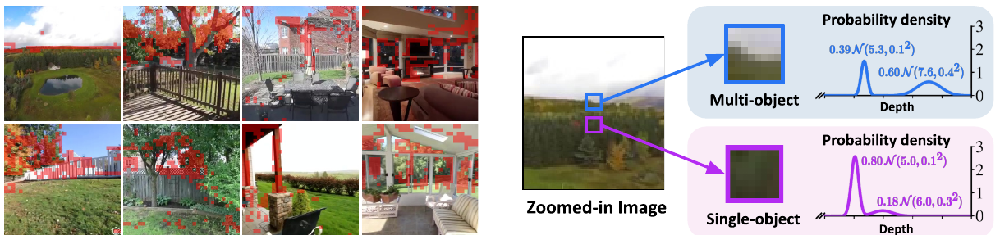
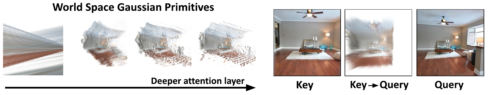

WorldRoPEProbabilistic World-Centric Rotary Embedding for Multi-View Attention
1ECE · 2IPAI, Seoul National University
Under Review
Paper ↗TL;DR: Multi-view attention, grounded in 3D.
Abstract
Rotary Positional Embedding (RoPE) encodes relative positions in Transformers, but image coordinates are defined separately in each camera view. We introduce WorldRoPE, a probabilistic world-centric RoPE for multi-view attention. At each layer, patch tokens predict mixtures of 3D Gaussians in a shared world frame. These primitives capture alternative depths, uncertainty, and the spatial extent of a patch.
Projected into a query view, the Gaussians define where a key token may appear. WorldRoPE integrates the rotary operator over this distribution in closed form, using mixture weights and covariance-dependent attenuation to guide attention without rasterizing token features. Updated features refine the geometry at the next layer. Experiments in novel view synthesis, stereo depth estimation, and feed-forward 3D reconstruction show its effectiveness across multi-view Transformers.
Why world-centric 3D Gaussians?
A patch covers a viewing frustum, often crossing more than one depth. A mixture of volumetric Gaussians can retain those alternative surfaces, their uncertainty, and the finite footprint of the patch.

How does this enter attention?
Token features predict the Gaussians. Projecting them into the query view places possible key positions alongside the query; a closed-form rotary expectation then guides attention. Updated features predict geometry again at the next layer.

The expected operator combines rotations at the projected Gaussian centers with covariance-dependent attenuation. It acts on positional evidence without rasterizing or warping token features.
Interactive Projected Distribution
Move the key camera in 3D and change the possible depths of its center patch. The right panel shows the combined projected distribution in the query view.
3D camera pose and depth
Drag the blue K camera up or down to change Y, including below zero. Drag the XZ handle to change depth and horizontal position.
Camera geometry interactive 3D view
Projected Probability Distribution (Query View)

Color encodes density relative to the visible peak (0–1). The equal-weight mixture integrates to one over the full query plane.
Demo assumptions
The center key patch has two possible depths with equal mixture weight and independently adjustable depth standard deviations, as in the paper's per-hypothesis mixture. A fixed 3D depth σ can look narrower after projection at a greater depth because perspective reduces disparity. Its depth uncertainty and optional patch footprint are projected through the fixed query camera. The dashed epipolar line is the projection of the center key ray over varying depth. To make spatial extent visible at this display size, the illustrative patch-footprint width is enlarged and grows with depth; it is not a learned covariance. A half-pixel regularization keeps the displayed density finite when spatial extent is off. Probability outside the query image frame is not shown.
Does the world-centric 3D support improve synthesis?
Within LVSM, WorldRoPE improves all three reported image-quality metrics on RE10K and Objaverse. In the examples below, thin structures remain more distinct.

| Method | RE10K | Objaverse | ||||
|---|---|---|---|---|---|---|
| PSNR ↑ | SSIM ↑ | LPIPS ↓ | PSNR ↑ | SSIM ↑ | LPIPS ↓ | |
| Plücker ray | 24.62 | 0.790 | 0.108 | 15.15 | 0.838 | 0.355 |
| GTA | 25.05 | 0.799 | 0.102 | 22.22 | 0.892 | 0.123 |
| PRoPE | 25.44 | 0.811 | 0.095 | 22.41 | 0.894 | 0.117 |
| RayRoPE | 26.17 | 0.833 | 0.081 | 22.25 | 0.892 | 0.121 |
| URoPE | 26.26 | 0.834 | 0.078 | 21.99 | 0.890 | 0.128 |
| WorldRoPE | 26.75 | 0.846 | 0.073 | 22.52 | 0.896 | 0.113 |
PSNR is in dB. These are the values reported in Table 2 of the paper.
What do the world-centric Gaussians capture?
At a boundary between vegetation and sky, one token can have two depth peaks. Across attention layers, the predicted support becomes more structured in the paper's visualizations.


Does it transfer beyond synthesis?
WorldRoPE is also evaluated in UniMatch for stereo depth estimation and in VGGT for feed-forward 3D reconstruction.
Stereo depth estimation
On the unseen ScanNet++ dataset, WorldRoPE records the lowest AbsRel and RMSE in the paper's UniMatch comparison.
| Method | Scenes11 RMSE ↓ | SUN3D RMSE ↓ | RGBD RMSE ↓ | ScanNet++ AbsRel ↓ | ScanNet++ RMSE ↓ |
|---|---|---|---|---|---|
| RayRoPE | 0.743 | 0.370 | 0.677 | 0.257 | 0.426 |
| URoPE | 0.686 | 0.374 | 0.637 | 0.234 | 0.398 |
| WorldRoPE | 0.661 | 0.356 | 0.630 | 0.224 | 0.386 |
Feed-forward 3D reconstruction
In the VGGT comparison on ScanNet++, WorldRoPE has the lowest reported depth, camera-space point, and camera rotation errors.
| Method | Depth AbsRel ↓ | Norm. RMSE ↓ | Camera points AbsRel ↓ | Rotation error ↓ |
|---|---|---|---|---|
| RayRoPE | 0.0579 | 0.0624 | 0.0575 | 1.04 |
| URoPE | 0.0581 | 0.0626 | 0.0576 | 1.02 |
| WorldRoPE | 0.0567 | 0.0619 | 0.0565 | 0.98 |
For derivations, ablations, and implementation details, read the full paper ↗.